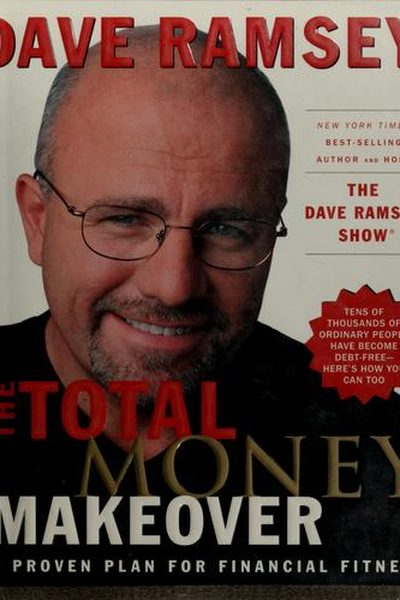

Library › Money & Finance
The Total Money Makeover — Summary & Key Lessons

A proven plan for financial fitness — the 7 baby steps that get you out of debt and building wealth.
📖 OPEN THE FULL INTERACTIVE BREAKDOWN →🌐 Read it in Hindi, Hinglish, Gujarati, Tamil & 22 more languages — free, with audio.
💡 The Big Idea
Dave Ramsey's battle plan for money: get out of debt (except the house) and stay out, using his 7 Baby Steps: (1) save ₹1,000 starter emergency fund, (2) pay off all debt with the debt snowball, (3) save 3-6 months of expenses, (4) invest 15% for retirement, (5) save for kids' college, (6) pay off the house early, (7) build wealth and give. His philosophy: debt is risky and dumb, cash is freedom, and behavior change beats math — which is why he uses the debt snowball (smallest debt first for motivation, not interest rates).
🧠 The 6 Key Lessons
Lesson 1: The 7 Baby Steps: The Whole Plan
The Plan
The plan is simple and sequential: starter emergency fund, debt snowball, full emergency fund, 15% retirement investing, kids' college, pay off the house, then build wealth and give. Each step is a clear finish line — no ambiguity, no options, just the next step.
📖 Example: Ramsey's millions of followers use the steps as a checklist: finish step 1 before step 2, never skip steps. The simplicity is the strategy. Read the full example →
⚡ Do this: Write down your current Baby Step number. Read the definition of that step and take its first action this week.
Lesson 2: The Debt Snowball: Smallest First
The Debt Snowball
List your debts smallest to largest (excluding the house). Pay minimums on all, then throw every extra rupee at the SMALLEST debt until it's gone — then roll that payment to the next. It ignores interest rates on purpose: quick wins create momentum, and behavior change beats math.
📖 Example: A ₹5,000 medical bill paid off in two weeks gives a psychological win that fuels the year-long fight on the big loan. People who use the snowball stick with it; people who optimize for interest often quit. Read the full example →
⚡ Do this: List all your debts smallest to largest. Send one extra payment to the smallest this month.
Lesson 3: The Starter Emergency Fund
The Plan
Before paying off debt, save a small starter emergency fund (₹1,000 in Ramsey's original US terms — scale to your situation: a month of basic survival). This fund keeps life's surprises from pushing you deeper into debt. It's small on purpose — you can build it fast and move on.
📖 Example: The starter fund means a flat tire becomes an annoyance, not a credit-card emergency. Ramsey insists the order matters: tiny buffer first, then debt attack. Read the full example →
⚡ Do this: If you don't have a starter emergency fund, save it this month — before starting the snowball.
Lesson 4: The Envelope System: Cash Is Real
The Envelope System
For variable spending categories (food, fun, fuel), use cash envelopes: decide the month's amount, put it in an envelope, and when it's empty, you're done. Cash makes spending physical and painful — cards make it invisible. The envelope system trains your budget to be real.
📖 Example: Ramsey's families who switch to cash envelopes report spending 20-30% less in the first month without feeling deprived — because they see the money leave. Read the full example →
⚡ Do this: Choose your most-leaked category (food/fun) and switch it to cash envelopes for one month.
Lesson 5: The 15% Retirement Rule
The Plan
After the emergency fund, invest 15% of your gross income for retirement — automatically, in good mutual funds with long track records. Not 5%, not 30%: 15%, because it's aggressive enough to compound well and sustainable enough to maintain. Automate it so it happens regardless of mood.
📖 Example: Ramsey's math: 15% invested from age 30 with decent returns creates a comfortable retirement; the automation is what makes it actually happen year after year. Read the full example →
⚡ Do this: Set your retirement investing to 15% of gross income, automated monthly — adjust your budget to make it fit.
Lesson 6: Live Like No One Else
The Payoff
The final step is generosity: build wealth and give. The whole journey — the budgets, the snowball, the sacrifice — is so you can live with margin, sleep peacefully, and help others. The discipline is temporary; the freedom is permanent.
📖 Example: Ramsey's famous line: 'If you will live like no one else, later you can live like no one else.' The years of disciplined cash living buy decades of freedom and generosity. Read the full example →
⚡ Do this: Write your 'financial finish line': the life you're building toward. Read it every time a baby step feels hard.
✅ 5-Step Action Plan
- Identify your current Baby Step and start it this week.
- Build your starter emergency fund.
- Start the debt snowball — smallest debt first, extra payments.
- Switch one category to cash envelopes.
- Automate 15% toward retirement after debt is gone.
💬 Best Quotes from The Total Money Makeover
- “A budget is telling your money where to go instead of wondering where it went.”
- “Debt is dumb. Cash is king.”
- “If you will live like no one else, later you can live like no one else.”
Interactive version: mark lessons as read, listen in your language, share quote cards.